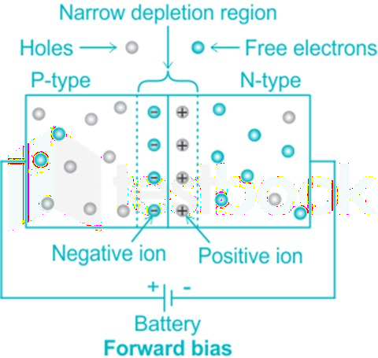
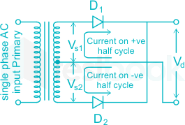
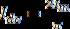
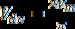

02 Pn Junction
P-N Junction Diode
The PN junction region of a Junction Diode has the following important characteristics
● Semiconductors contain two types of mobile charge carriers , Holes and Electrons .
● The holes are positively charged while the electrons are negatively charged .
● A semiconductor may be doped with donor impurities such as Antimony (N-type doping) contains mobile
charges which are primarily electrons.
● A semiconductor may be doped with acceptor impurities such as Boron (P-type doping) containing mobile
charges which are mainly holes.
The junction region itself has no charge carriers and is known as the depletion region.
In a p-n junction, holes are majority carriers in p-side and electrons are majority carriers in the n-side.
As there is a high electron and hole concentration in n-type and p-type near the junction, diffusion takes place
because of the concentration gradient, i.e. holes diffuse from p-type region to the n-type region and
vice-versa.
Barrier Potential of P -n Junction
The electric potential difference across the P-N Junction is called Barrier Potential.
Doping
The addition of impurities in a semiconductor to change its conductivity and other properties is known as dopping.
Barrier Potential depends upon
- 1. Materials used to make PN Junction: For silicon, it is 0.7 V for Germanium it is 0.3 V at room temperature.
- 2. Amount of dopping done: The amount of dopping will decide the amount of majority charge carriers in the junction.
- 3. Temperature: Increase in temperature will change the number of minority charge carriers. The electric field formed in the depletion region acts as a barrier This barrier is formed when some of the free electrons in the n-region diffuse across the junction and combine with holes to form negative ions The development of barrier potential in the depletion zone of a PN junction is consequent to diffusion of majority carriers across the junction
Depletion Region
It is the region near the p-n junction.
In this region, the flow of charge carriers (free holes and electrons) is reduced over a given period and finally results in zero charge carriers.
The width of the depletion region depends on the number of impurities added to the semiconductor
Forward Bias

The charge carriers are pushed towards the junction.
If the voltage of the battery is large enough diode-electrons reach the p-end of the diode and fill the holes.
● So, the depletion layer in the p-n junction is eliminated , and a current passes through the diode.
The battery continues to supply electrons for the n-end of the diode. This removes electrons from the p- end of the diode, which works as supplying holes.
With a further increase in voltage from the battery, the current increases.
The VI characteristic of a p-n junction diode
As we can observe in the V-I characteristic of P-N Junction diode
Very low forward current till the forward voltage reaches the cut-in voltage.
Having low forward and high backward resistance.
VI characteristic of PN junction is non-linear.
The minimum amount of voltage required for conducting the diode is known as "cut-in voltage" or "knee voltage".
It is the forward voltage at which the current through the PN-junction starts to increase rapidly.
Reverse Biased
The reverse saturation current, in a P-N junction diode, is due to the diffusive flow of the minority holes from the n-side to the p-side and the minority electrons from the p-side to the n-side.
In a reverse characteristic of the p-n junction, with respect to reverse voltage, the current increases in the range of nano ampere (silicon) or microamp (Germanium).
When voltage breakdown occurs, the current remains constant and not increase even though there is an increase in voltage. This current is known as reverse saturation current.
So, the reverse saturation current, in a p-n junction diode, depends on the diffusion coefficient of electrons and holes.
Rectifiers
Half Wave Rectifier
The basic circuit of a half-wave rectifier and its waveform with a resistive load is shown in Fig.
During the positive half-cycle of the input AC voltage, the diode is forward-biased (ON) and conducts.
While conducting, the diode acts as a short-circuit so that circuit current flows, and hence, a positive half-cycle of the input ac voltage is dropped across R L.
During the negative input half-cycle, the diode is reverse-biased (OFF) and so, does not conduct i.e. there is no current flow. Hence, there is no voltage drop across RL.
Half wave rectifier circuit diagram:
Ideal case
1) 2) 3)
4) 5)
- 6) The form factor is the ratio between RMS value and average
- 7) value. Form factor = 1.57
- 8) Crest factor = 2 = peak facto r
- 9) Rectifier efficiency (η) is the ratio between the output DC power and the input AC power. The formula for the efficiency is equal to: η = 40.6%, η = efficiency
- 10)
Peak Inverse Voltage (PIV):

It is the maximum voltage that occurs across the rectifying diode in the reverse direction.
● The diode is reverse-biased during the negative half-cycle and the maximum voltage applied across it
- 11) Transformer utilization factor = 0.28 (TUF)
- 12) O / P frequency = I / P frequency
- 13) Conduction angle, θ = π
- 14) Ripple Factor ‘Ripple’ is the unwanted AC component remaining when converting the AC voltage waveform into a DC waveform. Even though we try out best to remove all AC components, there is still some small amount left on the output side which pulsates the DC waveform. This undesirable AC component is called ‘ripple’. To quantify how well the half-wave rectifier can convert the AC voltage into DC voltage, we use what is known as the ripple factor (represented by γ or r). The ripple factor is the ratio between the RMS value of the AC voltage (on the input side) and the DC voltage (on the output side) of the rectifier. Ripple factor = 1.21 D.C = Average value m = Maximum value RMS = Root Mean Square value
Applications of Half Wave Rectifier
Half wave rectifiers are not as commonly used as full-wave rectifiers. Despite this, they still have some uses:
For rectification applications For signal demodulation applications For signal peak applications
Advantages of Half Wave Rectifier
The main advantage of half-wave rectifiers is in their simplicity. As they don’t require as many components, they are simpler and cheaper to setup and construct.
As such, the main advantages of half-wave rectifiers are:
Simple (lower number of components) Cheaper up front cost (as there is less equipment. Although there is a higher cost over time due to increased power losses)
Disadvantages of Half Wave Rectifier
The disadvantages of half-wave rectifiers are:
They only allow a half-cycle through per sine wave, and the other half-cycle is wasted. This leads to power loss.
They produces a low output voltage.
The output current we obtain is not purely DC, and it still contains a lot of ripple (i.e. it has a high ripple factor)
Full wave rectifier
A bridge rectifier is of two types:
- 1) Bridge Type Full Wave Rectifier
- 2) Center-Tap Full Wave Rectifier
Bridge Type Full Wave Rectifier
A Bridge type full wave rectifier contains 4 diodes as shown:
Working:
For a positive half cycle, two diodes will act as short-circuit as shown
Similarly, for a negative half cycle, the other two diodes will be short-circuited resulting in a full-wave recti- fied output.
Center-Tap Full Wave Rectifier
A center tapped rectifier is also called a Full wave Rectifier, which consists of two diodes in its circuit.

During its Half-wave rectification, only one diode is in ON mode.
Working:
During the first half cycle of input interval:
The top diode will be in conducting state and the bottom diode will block the current.
The positive half-half cycle will be available at load and the top half of the transformer's secondary wind- ing carries current during this half-cycle.
During the second half-cycle of input interval:
The top diode will block the current & the bottom diode will be in conducting state.
The positive half-half cycle will be available at load and the bottom half of the transformer's secondary winding carries current during this half-cycle.
The figure shows tapping at the secondary winding of the transformer completes the closed circuit in both the first and second half cycle of input.
So the center tapping is necessary in order to get both the half cycles at the load.
This is the reason why a Center tapped transformer is necessary to the center-tapped rectifier.
Ideal Case
1) 2)

3)

4)
- 5) Ripple factor = 0.48
- 6) Form factor = 1.11
- 7) Crest factor = √ 2
- 8) η = 81.2%
- 9) PIV = 2 V m
- 10) TUF = 0.693
- 11) Conduction angle θ = 2 π
Advantages of Full Wave Rectifiers
The advantages of full wave rectifiers include:
Full wave rectifiers have higher rectifying efficiency than half-wave rectifiers. This means that they con- vert AC to DC more efficiently.
They have low power loss because no voltage signal is wasted in the rectification process.
The output voltage of a center-tapped full wave rectifier has lower ripples than a half wave rectifiers.
Disadvantages of Full Wave Rectifiers
The disadvantages of full wave rectifiers include:
The center-tapped rectifier is more expensive than a half-wave rectifier and tends to occupy a lot of space.